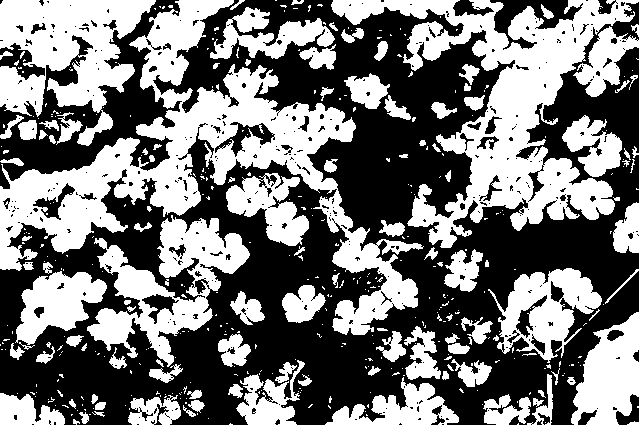
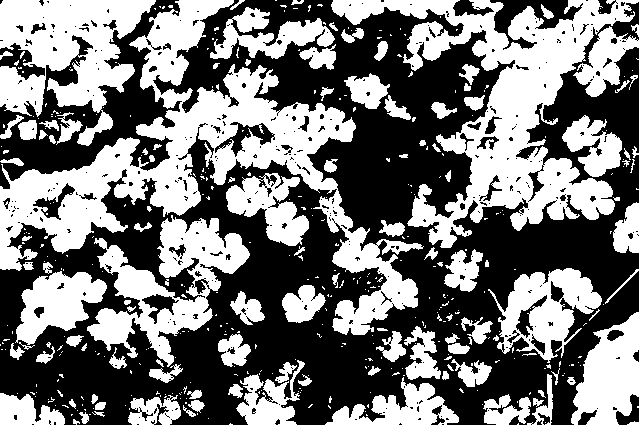

二値化
実行例
 

ソースコード
TypeScript
{kind=link}
解説/アルゴリズム
画像のピクセル毎に、前もって決めておいた条件をもとにピクセルの色を黒か白どちらかに変換する処理を二値化と呼びます。
とはいっても適当な条件で白黒にしても意味がありません。
よく使用される条件として挙げられるのは、ピクセルの色が黒に近ければ黒、そうでなければ白にする、というものです。
このページでは、グレースケールに変換してからの判定方法を解説します。
グレースケールで判定する場合
// しきい値
const threshold = 90;
// グレースケールの値を計算。
const gray = 0.299 * r + 0.587 * g + 0.114 * b;
// グレースケールとしきい値を比較。白か黒どちらに変換するのかを決める。
let value = 255;
if (gray < threshold) {
value = 0;
}
ピクセルの色を取り出し、RGB の値からグレースケール（明るさ）の値を求めます。
その値を見て、前もって決めておいた条件の値より小さければ黒に、でなければ白に変換します。
このような条件の値のことをしきい値（threshold）と呼びます。
コード例
import * as p5 from "p5";
new p5((p: p5) => {
let image: p5.Image;
// しきい値
const threshold = 90;
p.preload = () => {
image = p.loadImage("./0.jpg");
};
p.setup = () => {
p.createCanvas(p.windowWidth, p.windowHeight);
p.loadPixels();
// 画像の全ピクセルを走査
for (let y = 0; y < image.height; y++) {
for (let x = 0; x < image.width; x++) {
// 対象のピクセルを取り出す
const color = getPixel(x, y);
// RGBを取り出し、グレースケール（明るさ）を計算
const r = p.red(color);
const g = p.green(color);
const b = p.blue(color);
const gray = 0.299 * r + 0.587 * g + 0.114 * b;
// グレースケールの値がしきい値より小さければ黒、そうでなければ白に変換する
let value = 255;
if (gray < threshold) {
value = 0;
}
// 白か黒の色をセットする
setPixel(x, y, [value, value, value]);
}
}
p.updatePixels();
p.image(image, 0, 0);
};
function getPixel(x: number, y: number): number[] {
const i = (y * image.width + x) * 4;
return [
image.pixels[i],
image.pixels[i + 1],
image.pixels[i + 2],
image.pixels[i + 3],
];
}
function setPixel(x: number, y: number, color: number[]): void {
const i = (y * image.width + x) * 4;
image.pixels[i + 0] = color[0];
image.pixels[i + 1] = color[1];
image.pixels[i + 2] = color[2];
}
});